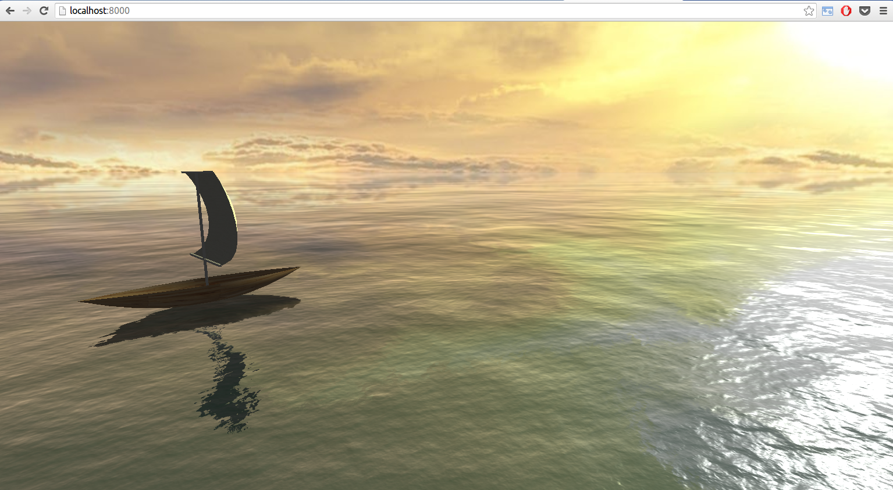

Ocean with Ship

I built an ocean scene which includes realistic water and a ship with a waving sail. The “S” and “D” keys rotate the direction of the waves and therefore the direction in which the ship is sailing; the arrow keys move the camera using standard orbit controls.
Ship
The body of the ship is simple – two mirrored Bezier surfaces for the sides and one smaller, flat Bezier surface for the floor. All three are texture-mapped with the same wood texture, and all of their geometries are implemented using the TW Bezier surface util function.
The sail of the ship is adapted from a Three.JS cloth demo. The demo pins the cloth only along its top edge; I modified it so it’s pinned along the bottom edge as well. I also refactored the cloth simulator class so it takes as arguments a wind force function and a user-defined constraint function; being able to pass in a constraint function lets me keep the sailcloth in front of the vertical sail post without hard-coding that behavior into the cloth simulator (wouldn’t have been appropriate because not all cloth stays in front of vertical).
Ocean
The realistic water relies on an open-source shader by Jérémy Bouny. The framework for my scene is an adaptation of his demo of the shader.
I spent a while working through the shader code to try to understand it because I wanted the user to be able to control the direction of the waves with keystrokes. It turns out that the “magic numbers” which divide time in the getNoise function define the direction of the waves. I spent a while trying to figure out whether it made sense to pass a direction parameter into the shader (I think not) and then whether it made sense to try to handle keystrokes in the shader (also think not). Instead, I decided to rotate the water plane and the ship together on keypress. The upside is that this is simple: it takes fifteen lines of code to link the rotation of the ship to the rotation of the water plane, and two keyboard callbacks to drive the rotation of the water plane with keypresses. The downside is that this doesn’t look particularly realistic: it looks like the water is rotating underneath the ship, not like the wind is changing. I’d love to know if there’s a standard / best-practice way of modifying a shader in response to user interaction (I’m pretty sure it’s possible – e.g. this demo) and whether that would look better than my rotate-the-water-plane workaround.
Footprint Minimization
Because I was uniting two open-source projects (the cloth demo and the ocean demo), I paid attention to the possibility of overlapping footprints. I refactored both demos and was careful to minimize footprint as I developed. The cloth simulation is an anonymous function, and the ship with sail (which I will contribute to cs307/threejs/contrib) is a self-executing anonymous function which registers the object SWALTER2_PROJECT with four specific exports (ShipWithSail and three associated methods) on window. The demo file and the file which manages user interaction are also self-executing anonymous functions which register as DEMO and WINDOW. (I LOVE self-executing anonymous functions because tidy little “interfaces” like this make it so much easier to understand what files' purposes are).